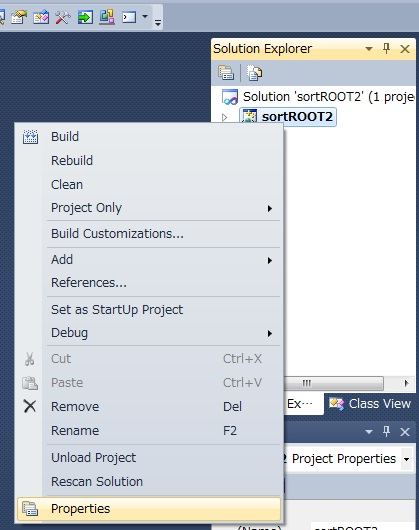
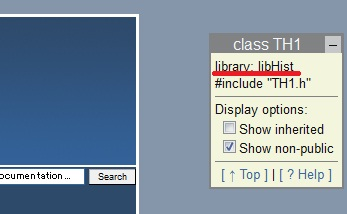
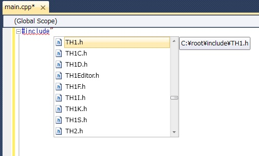

VC++でROOTライブラリを使う
CERNのROOTにはWindows版があります。これをインストールしてVC++でライブラリとして使う方法です。
手順
- ROOTのサイトからWindows版をダウンロード
- インストールする（インストーラ―を実行し、画面に従うだけ）
このとき、自動で環境変数$ROOTSYSが設定される。 - Visual C++を起動
- ROOTライブラリを使用したいプロジェクトを開き、ソリューションエクスプローラーでそのプロジェクトを[右クリック]-[properties]を開く。
 - [Configuration Properties]-[C/C++]の[Additional Include Directories]に「$(ROOTSYS)\include」を追加する。

- 同様に、[Configuration Properties]-[Linker]の[Additional Library Directories]に「$(ROOTSYS)\lib」を追加。
- さらに、[Linker]-[Input]の[Additional Dependencies]に必要なライブラリー名を追加する。
ここで追加するのは、libCore.lib（必須）と、使用するクラスに応じて必要なライブラリーです。
ROOTのWebサイトで各クラスのページの右上に、そのクラスを使うのに必要な.lib名が書いてあります。
 - 以上を入力してOKを押せば、ソースファイルで#includeと打つと使えるヘッダーファイルの一覧が出てくるので、この中から選びます。
 - デフォルトではDebugモードのみに適用されるので、ConfigurationをReleaseにする時はもう一度入力が必要になります。
Property Pageの左上でAll Configurationsにしておくとこの必要はありません。